Vivino is a very popular wine app containing millions of wines. Many wines have over 100k+ reviews!
I noticed approximately 0.5% (~1 in 200) of reviews contain the price a user paid and their sentiment for that price. An example of reviews with “price-sentiment” are shown in the diagram below.
An overview of my price-sentiment algorithm.
My idea is to crowdsource price-sentiments to judge whether the price of wine set by my liquor store is good or not.
For example, suppose the LCBO (my liquor store) sells a particular bottle for $13.99. I look at all of Vivino’s reviews for the bottle and find users who:
paid more than $13.99 and liked the price
paid less than $13.99 and disliked the price
This requires a large number of reviews to:
Train a machine learning algorithm
Decide whether a bottle has a “good” price
So, I scraped thousands of wine products from the LCBO website! I matched them to bottles on Vivino and gently downloaded about 6 million corresponding reviews. Both the LCBO and Vivino datasets are hosted on my local PostgreSQL database for fast querying.
I continued to gently amass 31 million reviews. This blog looks at the first partition of tables consisting of 11M reviews.
The Reviews
1. Header
Code: get number of reviews
import pandas as pdq ="""SELECT COUNT(*) as countFROM vivinoGROUP BY vivino_id;"""numReviews =sum(pd.read_sql(q, sql_address)['count'])numWines =len(pd.read_sql(q, sql_address)['count'])print(f"Total number of reviews: {numReviews}")print(f"Total number of wines: {numWines}")
Total number of reviews: 11214793
Total number of wines: 12845
Code: get number of reviews from extras table
import pandas as pdq ="""SELECT COUNT(*) as countFROM vivino_extraGROUP BY vivino_id;"""numReviews =sum(pd.read_sql(q, sql_address)['count'])numWines =len(pd.read_sql(q, sql_address)['count'])print("Note: From extra table not used in this analysis:")print(f"Total number of reviews: {numReviews}")print(f"Total number of wines: {numWines}")
Note: From extra table not used in this analysis:
Total number of reviews: 20134847
Total number of wines: 49517
Here is a histogram of all star ratings. Most votes are in 0.5 increments (e.g., 3.5, 4.0, 4.5). This is because the app had permitted users to only rate in 0.5-star increments.
Code: get SQL table and plot ratings
import matplotlib.pyplot as pltq ="""SELECT ratingFROM vivino;"""tbl = pd.read_sql(q, sql_address)plt.hist(tbl['rating'], bins=81)plt.xlabel('Star Rating')plt.ylabel('Count (millions)')plt.title('Distribution of Star Ratings')plt.xlim(0.95,5.05)plt.show()
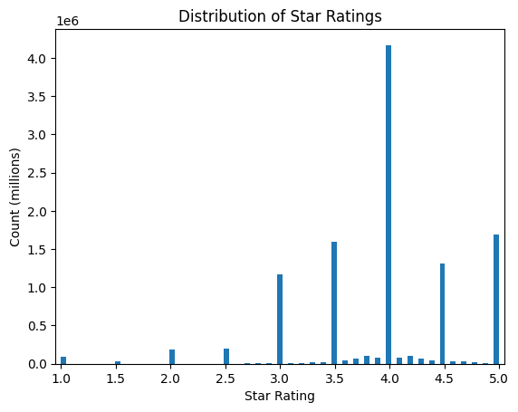
There are reviews with low ratings! Here is a log-y plot.
Code: plot histogram of ratings
plt.hist(tbl['rating'], bins=81, log=True)plt.xlabel('Star Rating')plt.ylabel('Count')plt.title('Distribution of Star Ratings')plt.ylim(0.9, 1e7)plt.xlim(0.95,5.05)plt.show()
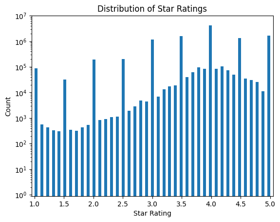
Let’s integrate the histogram to get a cumulative distribution.
Code: plot cumulative distribution of ratings
plt.hist(tbl['rating'], bins=81, cumulative=True, density=True)plt.xlabel('Star Rating')plt.ylabel('Normalized Density')plt.title('Cumulative Distribution of Star Ratings')plt.xlim(0.95,5.05)plt.show()
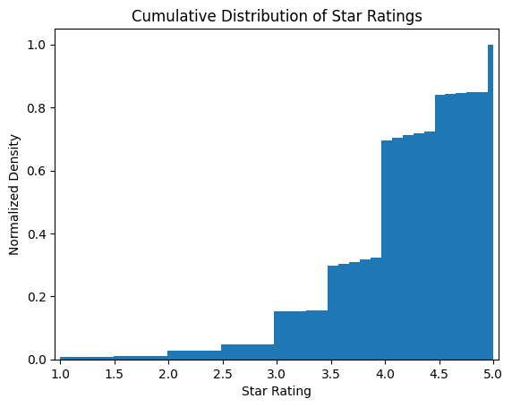
The above plots clearly show the ratings are distributed in a highly irregular fashion.
Looks like less than 5% of bottles are rated below 3-stars. Why?
Theory 1: Most bottles are decent or awesome.
Theory 2: Low ratings are hidden… (unlikely)
Theory 3: 3 stars is considered bad.
Theory 4: Bots.
Theory 5: There are more theories but I’m not a wine expert.
The answer is likely some combination of theories 1, 3, and 5. For instance, I would not expect many true 1-star wines to make it to market due to severe costs of production and self-destructive branding. Rather, 1-star ratings are likely from faulty/damaged bottling or storage, peculiar drinking preferences, or splitting1.
Wine Spectator’s100-point Scale gives credence to Theory 3. Anything below 50-pts or 3-stars is “Not recommended” and would be a devastating review.
Note: I had no impression of Theory 4 until I dug a tiny bit deeper. There are a LOT of inexplicable behaviour that would surprise me if they were human.
Average Rating per Wine
The distribution of the average rating per wine shows a nice demonstration of the Central Limit Theorem.
Code: plot histogram of average rating per wine
from scipy.optimize import curve_fitimport numpy as npdef gaussian(x, mu, sigma, a):return a*np.exp(-0.5*(x-mu)**2/sigma**2)q ="""SELECT AVG(rating) as avg_ratingFROM vivinoGROUP BY vivino_id;"""tbl = pd.read_sql(q, sql_address)h = plt.hist(tbl['avg_rating'], bins=81)xdata = h[1][1:] -0.5*np.diff(h[1])[0] #get center of edges.ydata = h[0]popt, pcov = curve_fit(gaussian, xdata, ydata, p0=(4, 0.5, 100))plt.plot(xdata, gaussian(xdata, *popt), 'r-', label=r'Gaussian: $\mu$=%5.3f, $\sigma$=%5.3f'%tuple(popt[0:2]))plt.xlabel('Star Rating')plt.ylabel('Count')plt.title('Cumulative Distribution of Star Ratings')plt.xlim(0.95,5.05)plt.legend()plt.show()
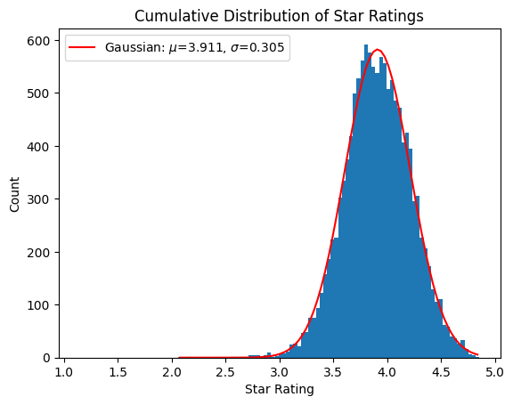
3. Reviews
Let’s look at the distribution of reviews per wine bottle. I use log-binning to capture the granularity of wines with few reviews.
A log-normal distribution with a bit of skewness is a good description. These distributions appear normal when the x-axis is logscale.
Code: plot histogram of reviews per bottle
q ="""SELECT count(*) as countFROM vivinoGROUP BY vivino_id;"""tbl = pd.read_sql(q, sql_address)def lognormal(x, mu, sigma, a):return a*np.exp(-0.5*(np.log(x)-mu)**2/sigma**2) / (x * sigma)h = plt.hist(tbl['count'], bins=np.logspace(np.log10(1),5, 100))xdata =10**(np.log10(h[1])[1:] -0.5*np.diff(np.log10(h[1]))[0])ydata = h[0]popt, pcov = curve_fit(lognormal, xdata, ydata, p0=(250, 50, 100))plt.plot(xdata, lognormal(xdata, *popt), 'r-', label=r'Log-Normal: $\mu$=%5.3f, $\sigma$=%5.3f'%tuple(popt[0:2]))plt.xlabel('Number of reviews per wine')plt.ylabel('Count')plt.xscale('log')plt.title(f'Distribution of Reviews per Wine')plt.show()
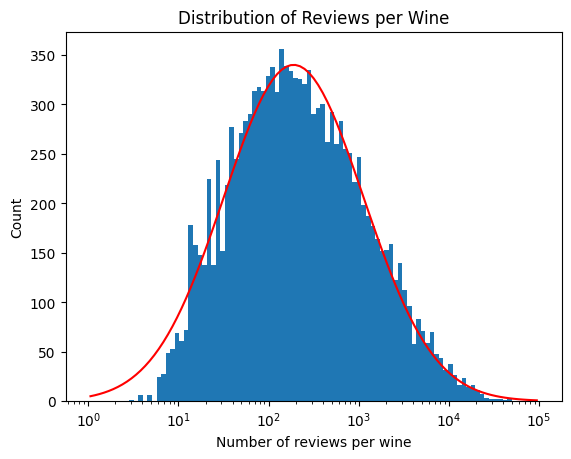
Most wines have between 50 to 500 reviews each. The peak is at ~250 reviews per bottle.
Earlier, I stated approximately 0.5% or 1-in-200 of reviews have price-sentiments (i.e., the reviews that I want). Let’s say we need 10 price-sentiments to have an interesting signal. Then only bottles with 2,000+ reviews will likely the signal I desire. From the cumulative distribution below, that is approximately 15% of bottles.
Code: plot cumulative distribution of reviews per bottle
h = plt.hist(tbl['count'], bins=np.logspace(np.log10(1),5, 100), cumulative=True, density=True)plt.xlabel('Number of reviews per wine')plt.ylabel('Cumulative number of wines')plt.xscale('log')plt.title(f'Cumulative Distribution of Reviews per Wine')plt.axvline(2000, c ='r')plt.show()
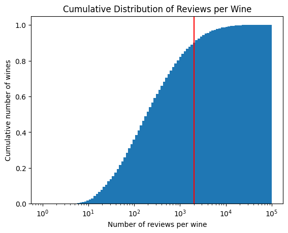
The above figure is for the entire dataset which includes wines I am not able to purchase at my liquor store. If I exclude those wines, I find approximately 450 bottles purchasable at our liquor stores have over 2,000 reviews. This suggests there are plenty of purchasable wines to build a wine recommendation app based on price-sentiment.
Code: plot cumulative distribution of reviews per bottle from LCBO
q ="""SELECT count(*) FROM ( SELECT vivid2 FROM ( SELECT sku, vivid2 FROM index_matches WHERE sku IS NOT null AND vivid1 IS NOT null AND vivid2 IS NOT null ) AS matches INNER JOIN ( SELECT sku FROM inventory GROUP BY sku ) AS buyable ON matches.sku = buyable.sku) AS buyableLEFT JOIN ( SELECT vivino_id FROM vivino) AS vivino_reviewsON vivid2 = vivino_idGROUP BY vivino_id"""tbl = pd.read_sql(q, sql_address)h = plt.hist(tbl['count'], bins=np.logspace(np.log10(1),5, 100), cumulative=True)plt.xlabel('Number of reviews per wine')plt.ylabel('Cumulative number of wines')plt.xscale('log')plt.title(f'Cumulative Distribution of Reviews per Wine (Purchasable at the LCBO)')plt.axvline(2000, c ='r')plt.show()print(f'There are {len(tbl)} bottles available at the LCBO.')
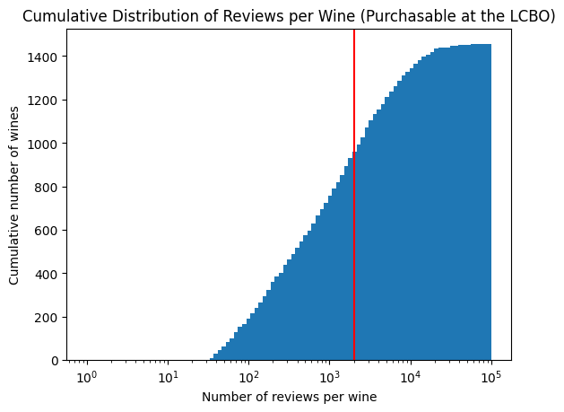
There are 1455 bottles available at the LCBO.
Text
Our next goal is to study the review strings such as the word and character lengths. Let’s grab a random set of 1 million reviews.
Code: get 1M random reviews
import req ="""SELECT review_id, review, language FROM vivinoORDER BY RANDOM()LIMIT 1000000"""tbl = pd.read_sql(q, sql_address)#delete more than one whitespacetbl['review'] = tbl['review'].apply(lambda x: re.sub(' +', ' ', x))
Code: plot histogram of character lengths
import matplotlib.pyplot as plttbl['charLength'] = tbl['review'].apply(len)plt.hist(tbl['charLength'], bins=int(max(tbl['charLength'])/2), log =True)plt.title('Distribution of Character Lengths per Review')plt.ylabel('Number of reviews')plt.xlabel('Number of characters')plt.ylim(1e2, 5e4)plt.show()print('Example of a 500+ character review:')print(tbl[tbl['charLength']>=500]['review'].iloc[10])
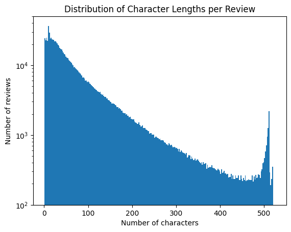
Example of a 500+ character review:
👁 Garnet red
👃 Cherry, raspberries and oak, the freshness is also very intense.
👅 Light body, well balanced, medium finish and very soft aftertaste, I didn’t feel the acidity which is characteristic of the Pinot Noirs, which gave me a good impresion of this wine!
**Esp
👁 Rojo granate
👃 Cereza, frambuesa y roble, tambien senti una frescura intensa agradable
👅 Cuerpo ligero, bien equilibrado, final medio y retrogusto suave. No senti la acidez caracteristica de los Pinot Noir, lo cual me agrado bastante!
Most users express write fewer than 100 characters. The users who express more appear as a spike in the distribution due to the 520 character limit. Very long reviews have a number of sentences and points. They often contain a story, lists of taste, smell, and sight descriptors, or common wine nomenclature (e.g., tannins, body, acidity).
Code: plot histogram of word lengths
tbl['wordLength'] = tbl['review'].apply(lambda x: len(x.split(' ')))plt.hist(tbl['wordLength'], bins=int(max(tbl['wordLength'] )), log =True)plt.title('Frequency of words per Review')plt.ylabel('Number of reviews')plt.xlabel('Number of words')plt.axvline(520/5.79, c ='k', lw=1, label ="4.79 char. per word")plt.legend()plt.show()
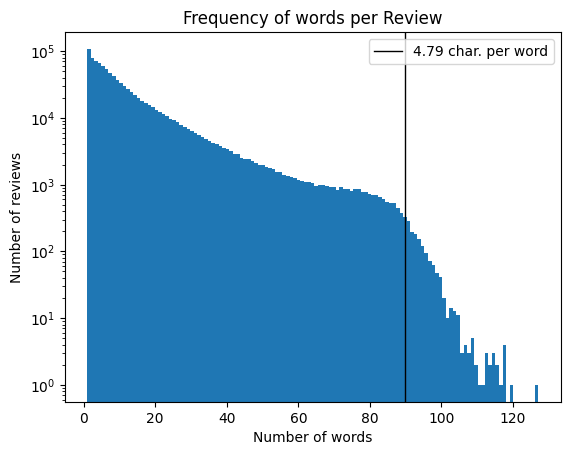
Figure 1: Frequency of words in reviews
A study of google books found that the average number of characters per word is 4.79 (Norvig). White spaces are counted in the character limit of reviews, so the average word approximately occupies 5.79 characters. The maximum number of average words in 520 characters is then 520 / 5.79 ~ 90 words, which is located at the knee in the distribution!
Let’s plot see how the character and word lengths are distributed together.
Code: plot character and word lengths
plt.scatter(tbl['charLength'], tbl['wordLength'], s=1, alpha=0.5, label='language: any')plt.scatter(tbl[tbl['language']==ja]['charLength'], tbl[tbl['language']==ja]['wordLength'], c ='r', s=1, alpha=0.5, label='language: ja')plt.title('Scatter Plot of Word and Character Lengths')plt.xlabel('Number of characters')plt.ylabel('Number of words')plt.plot([0,520], [0, 520/5.79], c ='k', label ="4.79 char. per word")plt.legend()plt.show()
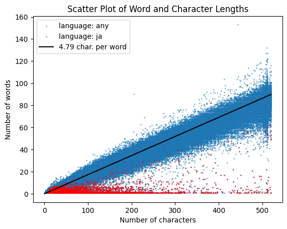
There are clearly two sets of distributions. The dominant diagonol distribution shows most reviews contain 4.79 characters (plus 1 white space) per word, no matter the review length!
The smaller distribution of reviews with a very high character-word density are either written in kanji, have numerous emojis, or are just riiiiiiiiiiiiiiiiiiidiculously long:
Hmm… There’s one user who enjoys writing reviews with very low information density.
Code: get number of duplicate reviews from francisco_silva6
tmpID =355128697q =f""" SELECT count(*)FROM vivino WHERE review = ( SELECT review FROM vivino WHERE review_id = {tmpID})AND user_seo_name='francisco_silva6' --the name condition makes no difference"""tbl_gra = pd.read_sql(q, sql_address)print(f'Number of duplicates: {tbl_gra["count"].iloc[0]}')tbl[tbl['review_id']==tmpID]['review'].iloc[0]
Wow. 131 duplicates! Lots of questions. This is a good opportunity to talk about Vivino’s users.
4. Users
Likes and Comments
Here are histograms for the number of likes and comments for a review.
Code: plot histogram of likes and comments per review
import mathq ="""SELECT likes_count, comments_countFROM vivino;"""tbl = pd.read_sql(q, sql_address)binWidth =20maxBinsLikes =int(math.ceil(max(tbl['likes_count'])/binWidth)+1)*binWidthmaxBinsComments =int(math.ceil(max(tbl['comments_count'])/binWidth)+1)*binWidthrangeBinsLikes =range(0,maxBinsLikes, binWidth)rangeBinsComments =range(0,maxBinsComments, binWidth)plt.hist(tbl['likes_count'], bins=np.logspace(np.log10(1),4, 100), log=True, label="Likes")plt.hist(tbl['comments_count'], bins=np.logspace(np.log10(1),4, 100), log=True, alpha=0.5, color ='r', label="Comments")plt.xlabel('Number of Likes, and Comments')plt.ylabel('Log Count')plt.title('Distribution of a Review Likes and Comments')plt.xscale('log')plt.legend()plt.show()
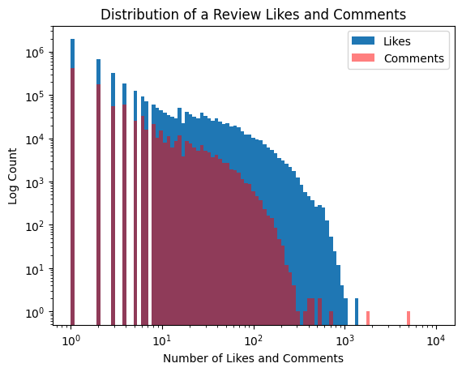
From experience, it makes sense that there are fewer comments than likes2 and that most reviews do not have many likes. There are ~100 reviews that have over 500 likes, which is impressive. Here are a few samples:
Splendid Umbrian blend of 70% Merlot, 20% CS and 10% CF, originating from vineyards located on the Spello and Assisi hills, aged for 12m in French barriques and another 24m in the bottle.
Inky dark red, displaying scents of blueberries, blackberries, laurel, sweet almonds, smoky cedar and bitter dark chocolate refined with a whiff of mint.
Despite its age still very grippy, showing firm tannins that structure a dense core of fresh and juicy dark fruit with clear hints of pepper in the finisch.
4.0*
--------------------------------
⭐️ 90 P/ 4.0* Very nice aged Tawny Port. Typical for the style, with a good complexity and concentration. Can stand alone or with food (e.g. cheese).
👁 Pale tawny.
👃 Intense nose of tertiary flavors – raisins, tobacco, leather, cedar, roasted nuts, milk chocolate, butterscotch, rum infused berries, dates, cooked red and black berries.
👅 Half-sweet with a med+ acidity. High in alcohol with med and ripe tannins. The body is med+. The finish is dominated by fruity-tertiary notes and is med+ long.
--------------------------------
Merlot 55%+ syrah 35%+sangiovese 10%
Tonneau 12 months
At nose is quite complex: blackberry, blueberry, vanilla, cocoa, red flowers.
Rich tannins and good texture in mouth.
Good persistency with licorice notes.
--------------------------------
Bots?
It is shocking that there are reviews with more than a few hundred comments! That sounds busier than a controversial tweet. How can a review have over 2000 or 5000 comments?? Let’s take a peek.
Code: select reviews with over 400 comments
q ="""SELECT comments_count as comments, likes_count as likes, review, user_seo_name as name, user_followers_count as followers, user_followings_count as followingsFROM vivinoWHERE comments_count > 400ORDER BY comments_count;"""tbl = pd.read_sql(q, sql_address)tbl
comments
likes
review
name
followers
followings
0
405
205
They say you will always remember your first, ...
kelley_do
5997
2042
1
411
13
Schäumig wie‘s sein soll. Ansonsten sehr üppig...
luigi.pietronello
102
254
2
433
3
Wawww
ademar.ju
57
57
3
446
234
Rich modern style that incorporates classic Ri...
akarter
5886
147
4
520
1
Good wine!
alessandra.fag
14
20
5
547
514
A fantastic Syrah, deep black color, deep anim...
scorewine
16646
242
6
676
4
Vin blanc très sucré, véritablement de l'or en...
alexandre.yi
37
31
7
1848
0
Very very Nice amarone. Fruitful and full with...
m58cb20b86fe892ae6f5543f9e9b2c8c
0
0
8
5073
0
Very very nice sauternes.
m58cb20b86fe892ae6f5543f9e9b2c8c
0
0
Weird! It looks like m58cb20b86fe892ae6f5543f9e9b2c8c is a bot or experiment. Their profile shows some reviews with over 5,000 comments and zero likes. Here are comments for one of them:
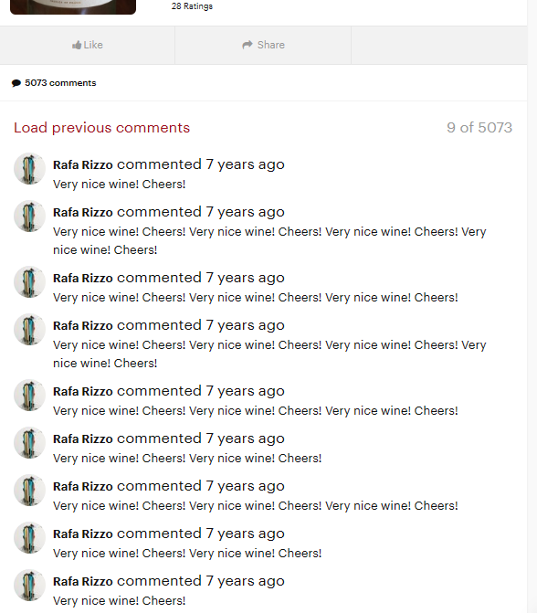
User ademar.ju has reviewed 24 bottles which have single-digit likes, hundreds of comments each, all of which are written by Leonel de Paula. Leonel de Paula also comments on their own wine reviews with emojis, and tags other users.
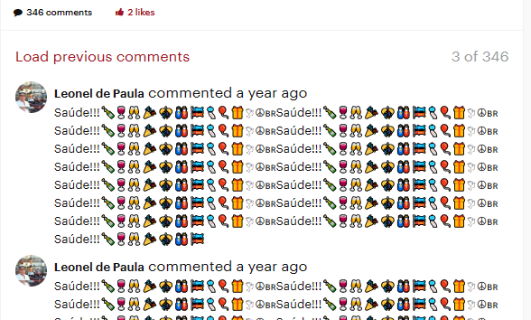
Some users like kelley_do and scorewine appear to be real people with strong passions for wine.
There is a lot more I can say about these bots on Vivino that I will say in my next blog post. For now, I do not find any reviews from suspected bots with prices in them. This suggests that my work on price-sentiments is unlikely to suffer from bots generating fake reviews.
Ratings count: Total number of ratings from the user.
Ratings sum: Sum of all of user’s ratings.
Reviews count: Total number of reviews authored from the user.
User connections:
Let’s see how reviewers are connected to their communities.
Code: plot followers vs. participation
q =""" SELECT user_followers_count, user_followings_countFROM vivino """tbl = pd.read_sql(q, sql_address)plt.scatter(tbl['user_followers_count'], tbl['user_followings_count'], s=1, alpha=0.5)plt.title('Reviewer Connections')plt.xlabel('Number of followers (celebrity status -->)')plt.ylabel('Number of followings (watcher status -->)')plt.xscale('log')plt.show()
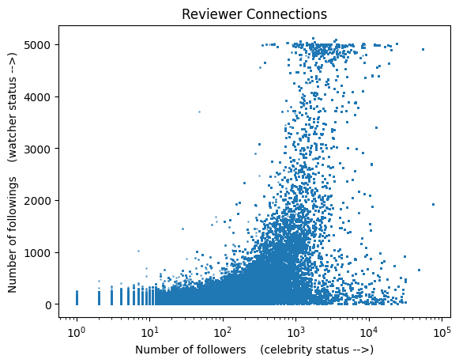
Wow! There’s a peculiar vase distribution. First, there’s some sort of uneven cap on the maximum number of people a reviewer can follow. The massive void on the left is striking and the reason is unclear just from this data. At the very least, it shows that you might be able to make connections just by following people. There is a lot of structure here that I will try to dig deeper in another post.
Participation
Let’s define a crude participation metric that equals the number of reviews authored plus ratings given. Then, plot this against the number of followers. (Yes, the results inherently ignore all Vivino users who do not write reviews).
There is a loose correlation between a user’s participation in reviews and ratings, and their follower count. My attention is drawn to the bottom where users have huge followings and participate very little. Let’s look at some of them:
Code
q =""" SELECT user_followers_count as followers, user_followings_count as followings, user_ratings_count as ratings, user_reviews_count as reviews, user_seo_name as usernameFROM vivino WHERE user_reviews_count + user_ratings_count <= 4AND user_followers_count > 200ORDER BY user_followers_count"""tbl_bot = pd.read_sql(q, sql_address)tbl_bot
followers
followings
ratings
reviews
username
0
210
409
1
1
roberto.campane
1
218
224
2
2
m7748f668dbdc131b7330298a3f91cb3
2
228
63
2
1
eduardo_silves
3
267
0
1
1
gabriel-moo
4
287
257
2
2
junior-ma
5
292
517
1
1
m778d4a83c4adc3c41786c1a8f45d28a
6
300
293
2
2
eva_bel
7
528
85
1
1
tino.ma
Ah ha! The mysterious m7748f668dbdc131b7330298a3f91cb3 users.
Usernames
I suspect the number of bots to be quite high. But, this is quite difficult to determine definitively without access to a user’s detailed logs. A potential gauge is number of characters in a username.
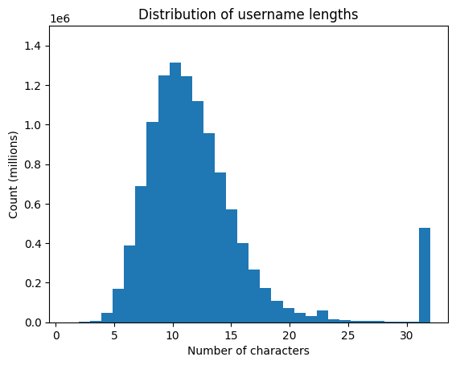
Woah! I wasn’t expecting a sizable number of users have the max length for usernames. Let’s take a look at some of the names.
followers
followings
num_reviews
num_ratings
username
len_name
2074247
0
0
11
12
edu.gaytan.eduardo101-gmail.com
31
1177568
74
20
874
919
university-of-bath.wine-society
31
8325228
0
5
13
13
jael.patricia-granados-kraulles
31
8796594
7
7
261
262
danton-cavalcanti.franco-junior
31
3811532
1
0
36
38
marc-antoine.mailloux-labrousse
31
1067813
5
5
64
64
b7941e714811716b34fec5f91046cae2
32
6142637
4
2
6
7
d0a0d35afcfa00b39219856348c1cb12
32
10306389
52
28
1274
1303
m276c28ed28bdf63ac70599392739db6
32
340985
6
8
19
23
m4a610a084aeb6643b624f19501e5dbc
32
8049959
393
105
312
312
m2210f2e3d21d5f526d8119fae5b94bd
32
1833623
0
1
5
5
m9b16842b2ac0920a9bd932d634ae788
32
3694206
0
0
15
29
m68f6cf0bd32342dd78045a1f291df1d
32
208288
0
0
25
32
c225723314b54f84b589ef58383ba9e8
32
7033437
2
0
86
86
sylvain-est-bon-.il-faut-le-boir
32
3228141
2
12
82
102
m4fdc413aa3597af25f1fd807f596cca
32
Ah. The 32-char names appear to be hashes. Some of these accounts appear legitimate. The backgrounds in their photos of wine appear to be the same environment for some users. It seems like a coincidence that the user with 5,000 comments on their reviews has the hash-like username.
Wine Notes
Reviewers list the ‘notes’ of wine in their reviews. A nice surprise found in this data is a list of notes identified by Vivino. There are many, many notes.
Number of distinct notes: 456
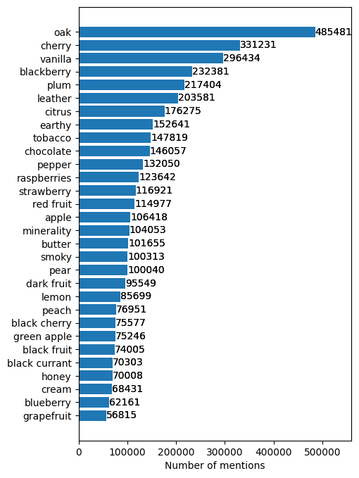
Next Steps
My next blogs will be about wine reviews and…
Bots!
Reviews with price-sentiment
Machine learning and sentence transformers
Unsupervised topic modeling
Thank you for reaching the end!
Footnotes
people who think black and white, or 1- and 5-stars only.↩︎